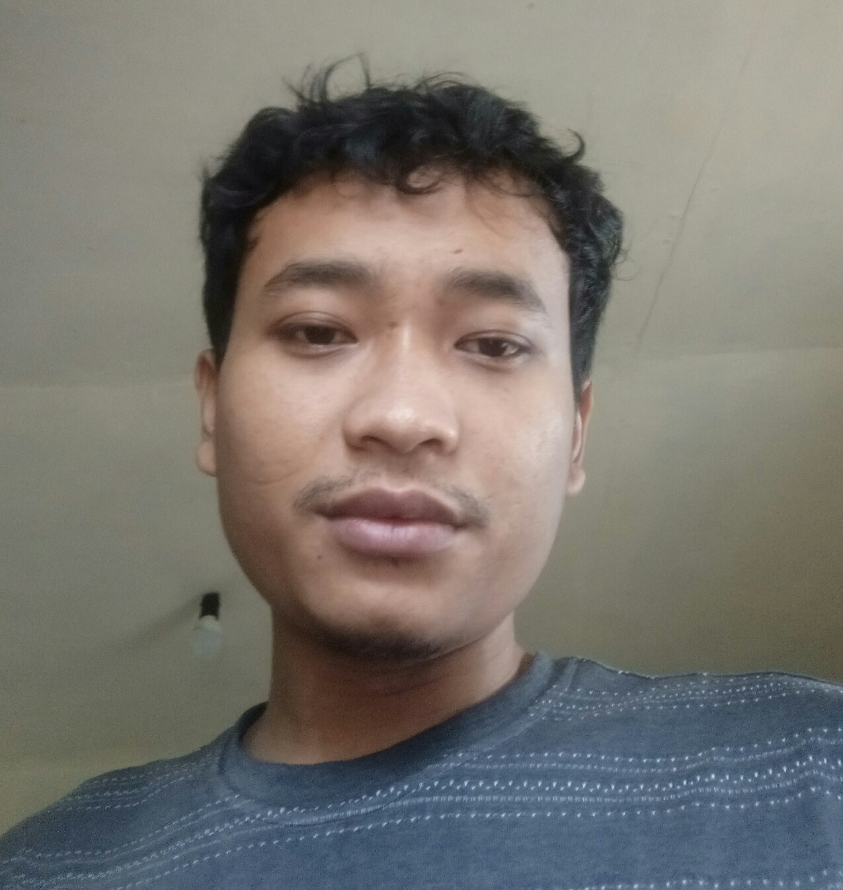

Yuyu
2D Artist | Illustrator
Hello, my name is Yuyu. I am a professional Illustrator based in Tasikmalaya, West Java, Indonesia. I've experienced for 5 years in this field especially in 2d art, hand drawn and visual storytelling. And I've completed many projects from clients.
So in this case if you've any projects in mind, you can contact me and start the project with me. I'm happy to work on some new creative projects. I believe every character and scene has a unique narrative waiting to be told. Contact me! You can check my Reviews on upwork to see what clients say.
×